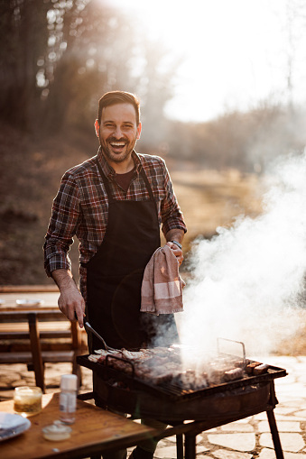
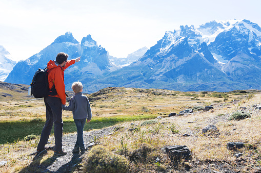
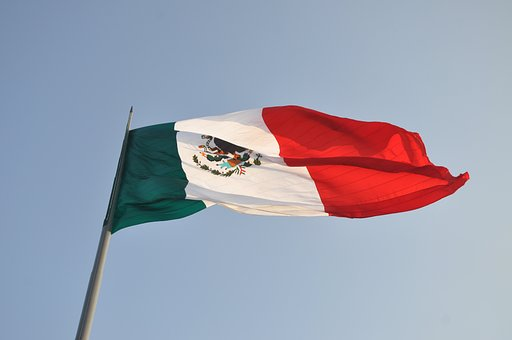
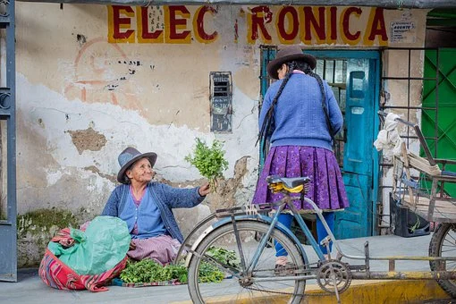
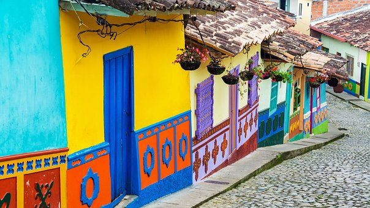
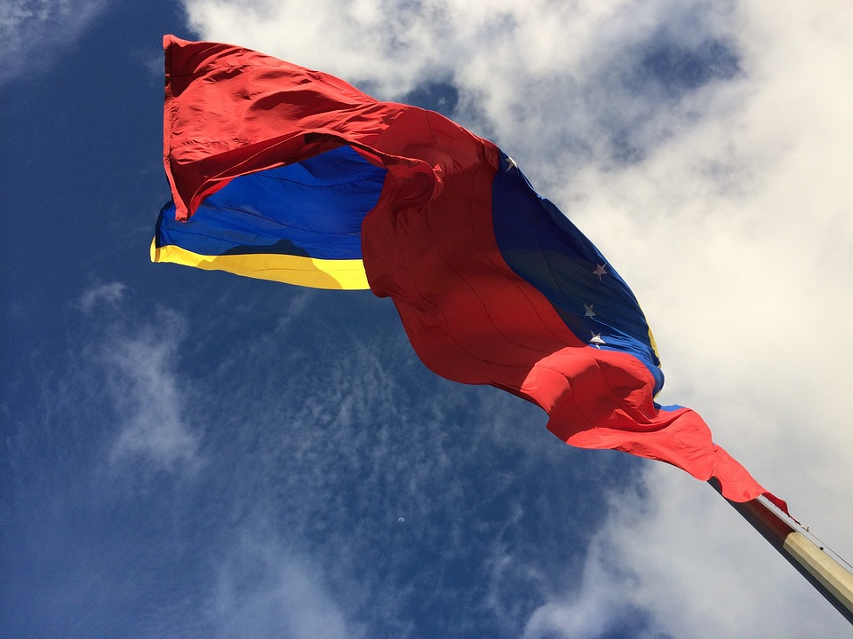
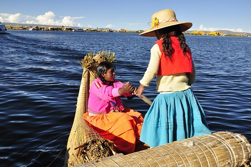
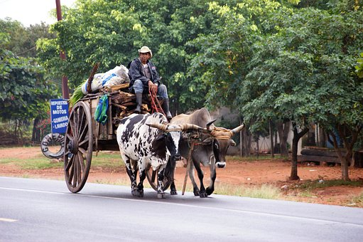
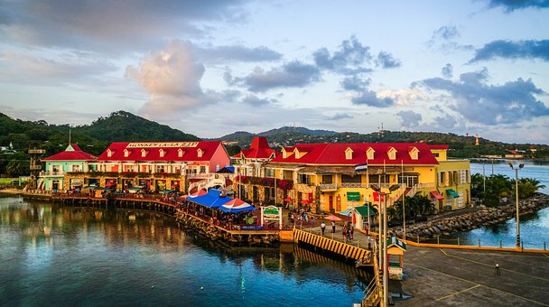

Countries
Ingredients List
In The Gastronomy Trip we do our very best in order to provide you with links to recipes spread in the internet that have ingredients that are easily found in the supermarket, no matter where you live. However, if there’s any ingredient that remains strange, you can do some research in your browser to get a rapid solution!
Remember, every recipe will ALWAYS have your own unique magic touch, so relax and have fun!
Emergency tip:
There will always be someone that will want to try that amorph first attempt thing that you
are ashamed of showing your family. If not, your dog may do the rest.
What do you need to get started?
In order to have the best experience possible, users of The Gastronomy Trip may have some free time to plan the next foreign meal, in case that they don’t actually have everything they need at hand. Otherwise, go to the kitchen and start the adventure!








